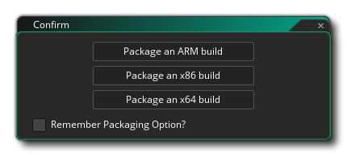

Compiling your game can mean one of two things: compiling it for
testing, or compiling it to create an asset package for a
specific target platform. Testing your game can be done by simply
pressing the Play button  at the top of the IDE, which will launch
the game for testing using the specified target. You can also run
the game in Debug Mode by testing using the Debug button
at the top of the IDE, which will launch
the game for testing using the specified target. You can also run
the game in Debug Mode by testing using the Debug button
 .
This will run the game, but also open up the Debug Window,
where you can monitor how your game performs and debug any issues
(see the section on Debugging for
more information).
.
This will run the game, but also open up the Debug Window,
where you can monitor how your game performs and debug any issues
(see the section on Debugging for
more information).
By default GameMaker Studio 2 will run and debug using
the built in VM (virtual machine), which is more or less the same
as running on the desktop OS being used. However GameMaker
Studio 2 is a cross platform engine and you can test,
debug and compile asset packages of your projects on a number of
different target platforms (the exact platforms available will
depend on the details of your licence). To change the current
target platform you can click on the Targets button
 to open the Targets Window,
which will look something like this (exact details will vary based
on your licence type):
to open the Targets Window,
which will look something like this (exact details will vary based
on your licence type): 
At the top, beside the Targets button, you have the current settings which tells you the platform and the specific settings actually being used, and then the rest of the window is taken up with the details and options for all the available targets which you can select to use instead. Each section of this window is explained below:
The first column of the Target Manager is dedicated to the Remote Workers that you have available. To begin with, you will only have a single "Local" machine listed here, which is the machine that GameMaker Studio 2 is installed on, but you can also configure a Remote Worker to use. When a Remote Worker has been configured, you will then be able to select it from the list here, and have it build your projects rather than use the host machine where GameMaker Studio 2 is installed.
For more information on how to set up and use Remote Workers, please see the section below:
This section lists all the available target platforms. The contents of this list will vary depending on the licence that you have, but will always have at least the "Test" target. To select a target, simply click
on it. This will then update the rest of the options windows to show different details depending on the platform selected.
Each target platform can have one or more output formats, the main ones being:
- VM: The VM (Virtual Machine) target uses a generic runner for each platform and then interprets the code for your game. In general this option is used for testing due to its faster build times, but it does not offer the same performance boost that using the YYC option (if available) offers. You can use this to compile smaller game or games where performance is not ever going to be an issue, however.
- YYC: The YYC (YoYo Compiler) takes the normal GameMaker Studio 2 output and compiles it into native code for the target platform, "stripping out" unneeded functions and performing a host of other optimisation techniques to create a smaller and performance enhanced executable. This can increase your games performance by at least two or three times, especially on logic-heavy games, ideal for those larger or CPU intensive games. Compile times may take longer and you should always clear the compiler cache before building any final complete asset package for a target platform. Note that the YYC target may require extra tools to be installed for the platform selected, otherwise it will not work - you can find further information about this from the YoYo Games Help Center as well as on the individual target Preferences pages detailed in this manual.
- JavaScript: The JavaScript target will only be available for a few targets, like the HTML5 target, and sets the game to be compiled to pure JavaScript.
Certain platforms (like iOS or Android) permit you to associate one or more devices with GameMaker Studio 2 so that games can selectively compile to them. Initially, the device list will be empty and you need to click
to open the Device Editor:
Here you can add new devices as well as have GameMaker Studio 2 test for a connection to any device(s) that may be connected. The exact contents of this window will depend on the platform specifics (see the section on the Device Manager for exact details for any given platform). Once a device has been found or added, it will then be shown in this window, like in this example image for Android:
The exact procedure and requirements for setting up devices and troubleshooting issues can be found in the appropriate section of the GameMaker Studio 2 Knowledge Base.
As explained in the section on Configurations, you can store certain details for compiling your game as Configs. This section of the Targets window permits you to have GameMaker Studio 2 automatically select a specific configuration for a specific target platform.


Creating A Final Executable Package
Compiling your game project to any target platform will require
that you have set up the correct build tools (see here) and also
filled in the appropriate Platform
Preferences. Once you have done that you can simply click the
Create Executable button  in the IDE to start the compiler
build or select Create Executable from the Build Menu. Either option will open a
file explorer window where you can give the final name that you
wish to use for your game package before clicking Save to
start the compile and build process. Once you have done this, the
necessary files will be generated so that you can distribute it as
you wish.
in the IDE to start the compiler
build or select Create Executable from the Build Menu. Either option will open a
file explorer window where you can give the final name that you
wish to use for your game package before clicking Save to
start the compile and build process. Once you have done this, the
necessary files will be generated so that you can distribute it as
you wish.
Each target option saves to a platform specific format, listed
below:
- Windows - Compiling for the general Windows OS will
first request that you choose between creating an Installer
or a Zip package, where the installer will be a single
executable that will install your game, and the Zip file will be a
single zip format compressed file with all your game files stored
within (the files will need extracted for the game to run).
 If you check the box marked
Remember Packaging Option then GameMaker Studio 2
will remember the choice for all future compiles (this can be reset
or changed from the Windows
Preferences). You can find out more from the YoYo Games Help Center
If you check the box marked
Remember Packaging Option then GameMaker Studio 2
will remember the choice for all future compiles (this can be reset
or changed from the Windows
Preferences). You can find out more from the YoYo Games Help Center
- Ubuntu (Linux) - Ubuntu (Linux) apps can be compiled as
*.zip files. You can find out more from the YoYo Games Help Center.
- HTML5 - If you have chosen to build HTML5, then an
index.html file (this is the default name, but you can
give your own name too in the Platform Preferences) along with a
folder containing your games files will be created and saved to the
specified location. For your game to work you will need both
of these to be uploaded to a server. The index.html can
also be customised to show your game with a different background
colour, or at a different position etc... but a knowledge of HTML
is necessary for this, and you can also specify your own custom
index file when you build the package (see the HTML5
Game Options). You can find out more from the YoYo Games Help Center.
- Android - For Android devices, a single *.apk
file will be generated which can be used directly on any Android
devices or uploaded to the Google Play or Amazon
stores (or any other site that accepts Android apps). You can find
out more from the YoYo Games Help Center.
- iOS - Compiling to iOS will create an xarchive
file which is then used in Xtools to create the final iOS package.
Note that to compile for iOS you will require an Apple Mac
computer running OSX or higher as well as the relevant
certificates and permissions. You can find out more from the
YoYo Games Help Center.
- Mac OS - The Mac OS target will build either an
*.app file or a *.pkg file, depending on whether
you want to later upload it to the Mac App Store or not. As with
iOS you will require an Apple Mac computer running OSX or
higher as well as the relevant certificates and permissions.
You can find out more from the YoYo Games Help Center.
- Windows UWP - For Windows UWP, GameMaker Studio 2 will create an *.appx package which can then be uploaded to the Windows Store. When you click the Create Executable button you will be prompted to tell GameMaker Studio 2 which type of package you would like to create (can be either for ARM, x64 or x86 architectures), and you should choose that which targets the devices your game will be supported on:  If you check the box marked Package For Store Upload, then the final package created will be an .appxupload file, which is what Microsoft specifies should be used for submitting apps to their store, as explained in this article here. Also note that you can set the default Packaging Option from the UWP Preferences) so that GameMaker Studio 2 remembers the choice for all future compiles (meaning this options window will not be shown). You can find out more about setting up and compiling to UWP platform from the YoYo Games Help Center.
Once you have created your executable asset package you can then give the file to other people or place it on your website to download, or upload these files to the different hosting services for individual distribution or even to online stores (like Google Play, iTunes or the MS Store) for general distribution and retail.
Note that you are free to distribute the games you create with GameMaker Studio 2 in any way you like, including selling them. Of course, this assumes that the sprites, images, and sounds you used to make it can be distributed or sold as well and that you have the legal rights to all assets, and it also assumes that the game complies with the YoYo Games EULA for GameMaker Studio 2. You can find the licence agreement in the install folder for GameMaker Studio 2, typically "C:\Program Files\GameMaker Studio 2\Licence.txt".